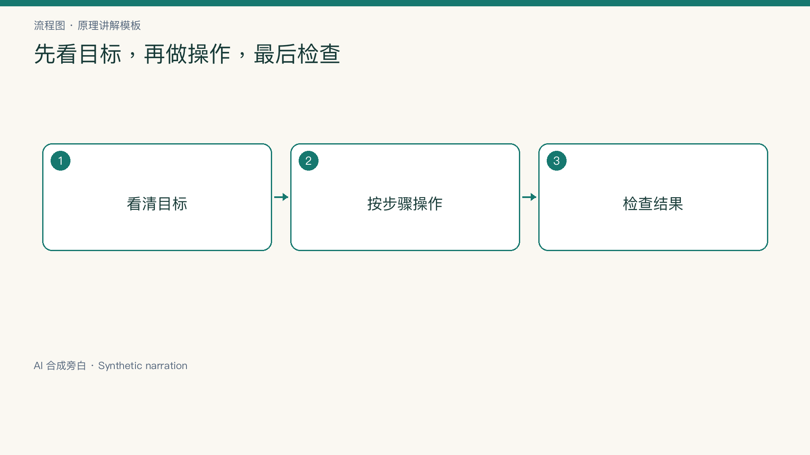
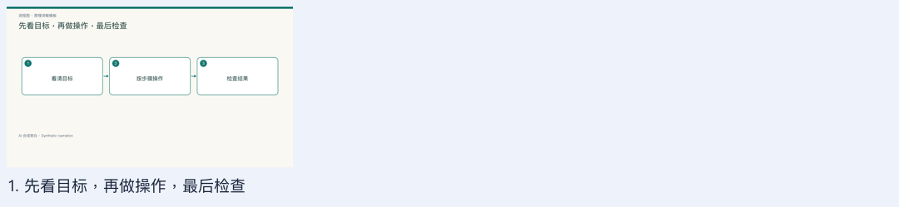

1. 先看目标，再做操作，最后检查

旁白：先看清目标，再按步骤操作，最后检查结果。
先看清目标，再按步骤操作，最后检查结果。
Understand the goal, follow the steps, then check the result.
Understand the goal, follow the steps, then check the result.
静态分镜预览 · 模板：原理与流程讲解。未生成新配音；画面中的字幕和动态指针将在样片中检查。
改项目 JSON 的 template/style/scenes 后重新运行 storyboard；用 preview 只生成选定分镜的有声样片。


旁白：先看清目标，再按步骤操作，最后检查结果。